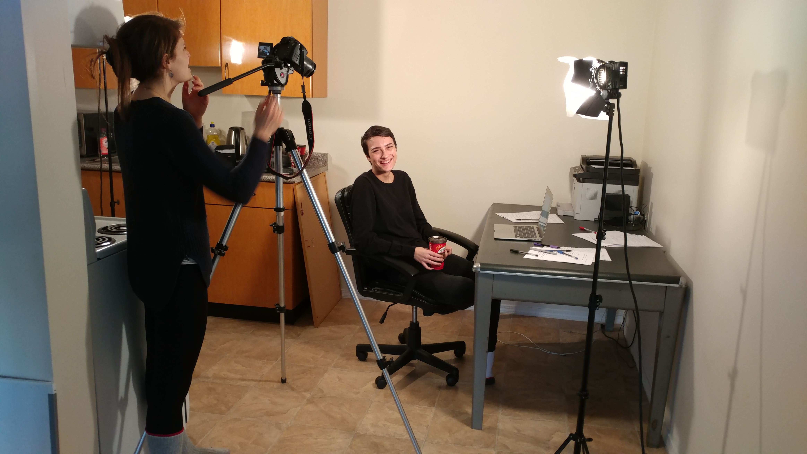
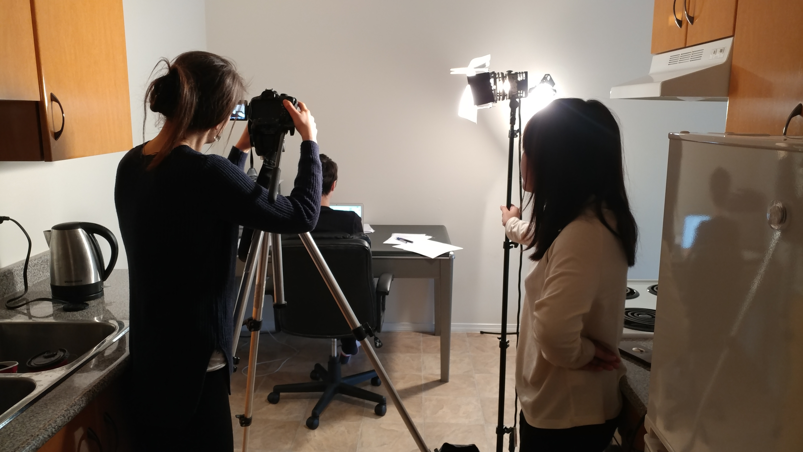
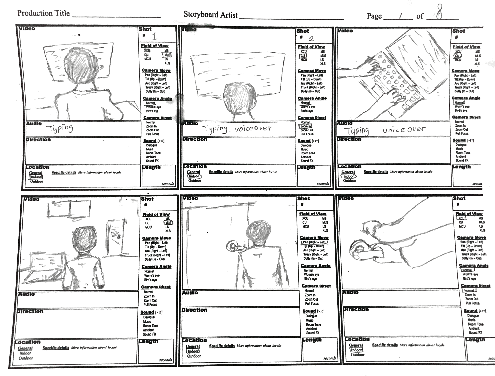
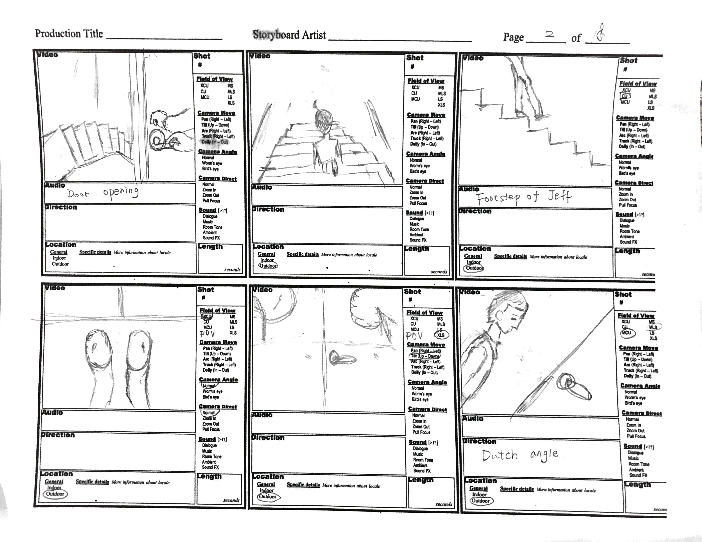

short film

summary
In the spring semester of 2017 I took a course called New Media Images which was an introductory film class. For the final project, I was in a group of three and was tasked with creating a narrative short film between 5-8 minutes.
My group decided on doing an adaptation of a short story called Psychosis by Matt Dymerski. The story is a psychological thriller about a person who becomes paranoid after spending an extended period of time alone in their apartment.
Over the course of roughly 4 weeks my team had to do everything from writing the screenplay to post production. My main role was to direct and edit our film. I had to work around my group's different schedules to set up times where we could all meetup to film.
process
I directed my small team making sure we got several takes of each scene from different angles and lighting to ensure we had some options when putting together the final product. We had to plan out a lot of details before meeting up to film so that our time was used efficiently and we weren't wasting time figuring out how to film certain shots on the day of.
 We started by creating a moodboard of images that had a similar feel to what we wanted our movie to look and feel like. We then made a storyboard to start planning out the types of shots we wanted. After this, we created the script and then adjusted our storyboard to better suit the script.
 challenges
Since everyone on my team had different schedules, we didn't have a lot of days where we could dedicate to filming and therefore had to make sure we got everything we needed in those few precious days. There were scenes in our film that required us to yell and be loud so we had to get these done in as few takes as possible since our filming location was in an apartment building and we didn't want to upset the neighbours.
reflection
With the limited time and resources it was difficult to create the film that I had originally pictured in my mind and thus it didn't quite turn out the way I wanted it to. However, I learned a lot about the process of making a film, from pre-production, filming, to post-production. I improved my skills as a film director through this project and will improve this skill through future projects.